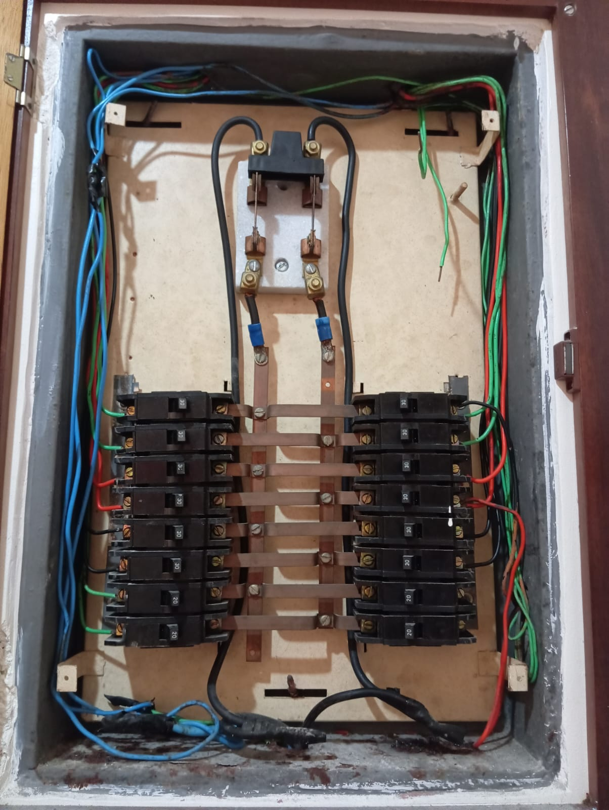
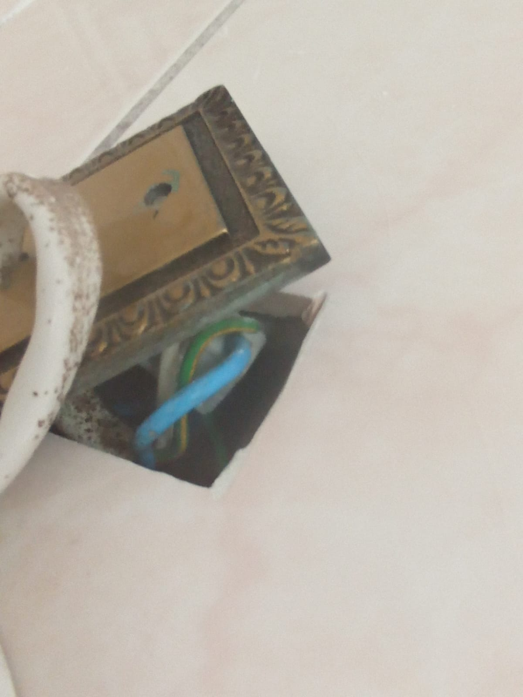
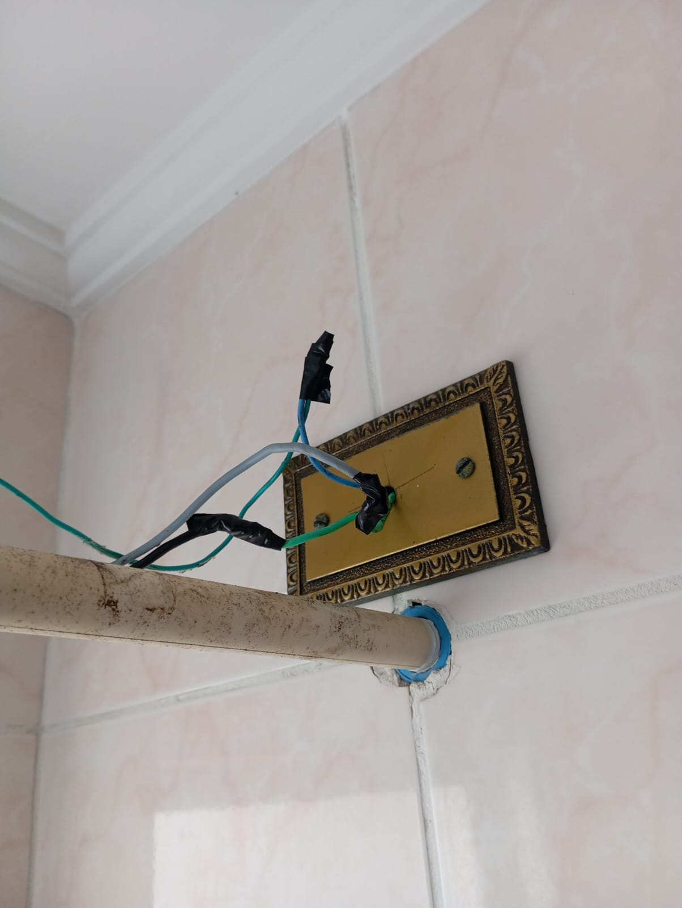

Foram constatados cabos rígidos antigos com desgaste avançado, comprometendo a eficiência e a segurança da instalação elétrica.
Devido ao tempo de uso e às condições de isolamento dos condutores, há aumento no risco de falhas elétricas.

O sistema apresenta distribuição desigual de cargas, o que pode ocasionar sobrecarga em determinados circuitos e diminuição da eficiência energética.
A bitola dos condutores está incompatível com as correntes previstas nos circuitos, em desacordo com as especificações técnicas da norma. Esse problema pode causar superaquecimento, perda de energia e risco de incêndios.
Os circuitos elétricos foram projetados de forma inadequada, resultando em subdimensionamento ou superdimensionamento, comprometendo a segurança e funcionalidade.
O quadro de distribuição utiliza chave seccionadora ultrapassada, sem dispositivos de proteção como disjuntores modernos e diferencial residual (DR). Este quadro não atende aos requisitos de segurança e eficiência das normas atuais.
As emendas apresentaram má isolação, oxidação e desgaste, fatores que elevam o risco de curto-circuito e mau funcionamento.


O cabeamento e os disjuntores destinados aos chuveiros não possuem capacidade adequada, aumentando os riscos de sobrecarga e aquecimento excessivo.
Apesar de serem modelos recentes, as conexões utilizam cabos rígidos, que estão sujeitos a sobrecargas e falhas devido às condições atuais da instalação.